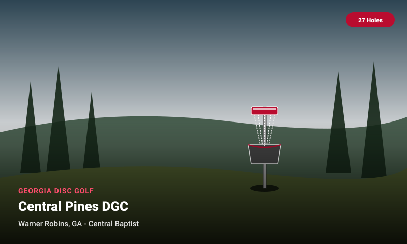
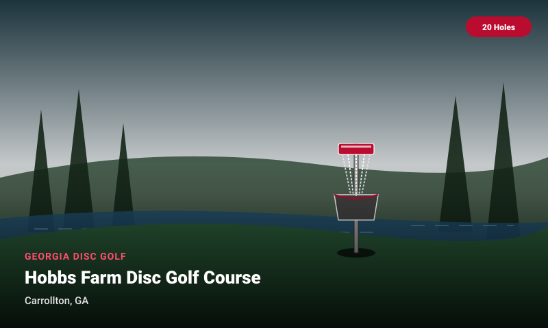
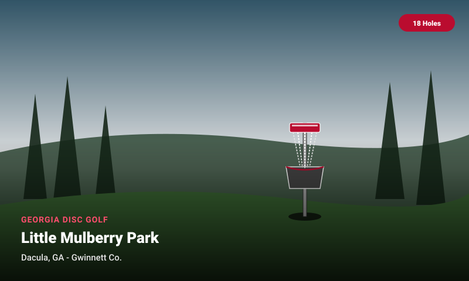
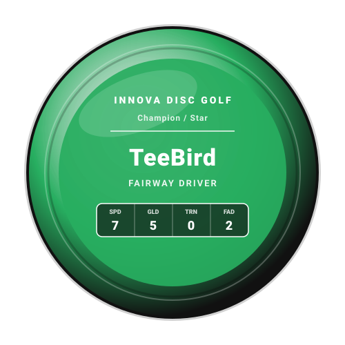
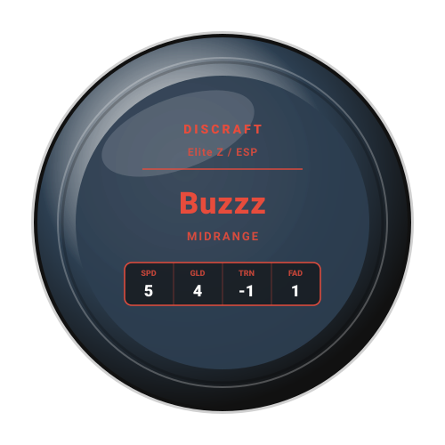

Local Community
Middle Georgia Directory
Verified course details, hole layouts, concrete teepad statuses, and local tips for top venues across Macon, Warner Robins, Perry, and Milledgeville.
Based in Macon, Georgia, Middle Georgia Disc Golf is an authentic community guide dedicated to showcasing local courses, highlighting championship road trip destinations across the Peach State, and sharing honest insights from a personal disc collection.
From the scenic shores of Lake Tobesofkee in Macon to the tight pine corridors of Warner Robins and rolling fairways of Milledgeville, Middle Georgia boasts one of the most welcoming and diverse disc golf scenes in the South.
Verified course details, hole layouts, concrete teepad statuses, and local tips for top venues across Macon, Warner Robins, Perry, and Milledgeville.
Curated highlights of five premier road-trip courses across Georgia, featuring championship layouts like Hobbs Farm, Little Mulberry Park, and Ogeechee Crossing.
Detailed breakdowns of 22 discs across four distinct categories. Compare verified manufacturer flight numbers, stability ratings, and intended fairway roles.
Hand-picked layouts in our home area that offer challenging gaps, water hazards, and fun layouts for every skill level.

Middle Georgia's premier 27-hole layout weaving through lakeside woods, elevation changes, and technical tunnel fairways along Lake Tobesofkee.
"Holes along the water require discipline. Pack extra discs when the afternoon lake breeze kicks in!"

A community masterpiece located at Central Baptist Church featuring beginner (green), intermediate (blue), and advanced (orange) 9-hole loops.
"The Orange loop demands precise hyzer-flip fairway drivers to hit tight gaps between tall Georgia pines."

Designed by touring pro David Feldberg, this course pairs a tight technical wooded front nine with an expansive rolling elevation back nine.
"A versatile bag is essential here. You will need your straightest midranges early and high-glide drivers late."
Every disc golf manufacturer utilizes a standard four-digit rating system to describe a disc's aerodynamic profile: Speed, Glide, Turn, and Fade.
Indicates the velocity at which the disc must be thrown to achieve its intended flight path. Faster discs feature wider rims that penetrate wind but require greater arm speed.
Describes the disc's ability to maintain loft during flight. High glide ratings (5–7) maximize distance downfield, while low ratings (1–2) offer pinpoint distance control in heavy winds.
Refers to high-speed stability: the tendency of the disc to bank to the right early in flight (for a right-hand backhand throw). Negative numbers (-2 to -4) produce easy hyzer-flips and turnovers.
Represents low-speed stability: the tendency of the disc to hook to the left as it loses forward speed at the conclusion of flight. High fade ratings (3–5) deliver dependable, predictable finishes.
Ready to expand your horizons beyond Middle Georgia? These are two of our absolute favorite road trip courses across the state.

Widely recognized as Georgia's finest championship layout. Designed by legendary course architect John Houck, Hobbs Farm features hand-stacked stone tee platforms, manicured fairways, and strategic water hazards.
"A true bucket-list experience for any Georgia disc golfer. Every hole demands thoughtful shot-shaping rather than pure distance."

An exhilarating mountain-style layout located in Gwinnett County. Featuring dramatic downhill bomber tee shots, tight hardwood gaps, and panoramic Georgia Piedmont views.
"Be prepared for a serious hike! The downhill shots on holes 1 and 18 are some of the most rewarding flights in the state."
A sneak peek at our tested disc lineup. Explore each category for comprehensive flight number comparisons and recommendations.

The gold-standard maximum distance driver. Reliable high-speed stability and dependable forward fade in gusty Middle Georgia conditions.

The benchmark pinpoint control driver. Holds straight lines through tight Georgia pine hallways before a trusted, forward finish.

The most versatile straight midrange in the sport. Holds any angle you throw it on: hyzer, dead straight, or gentle turnover.
Iconic beaded putter with chalky grip in humid Georgia summers. Delivers laser-true flight inside Circle 1 and dependable headwinds resistance.
Help grow our community directory! Submit recommendations for new local tracks, updated layouts, or seasonal condition reports.
Submit a Course Suggestion